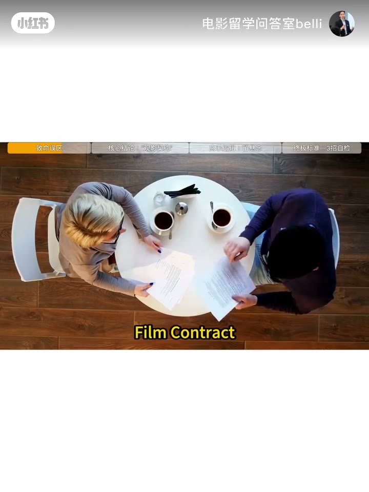
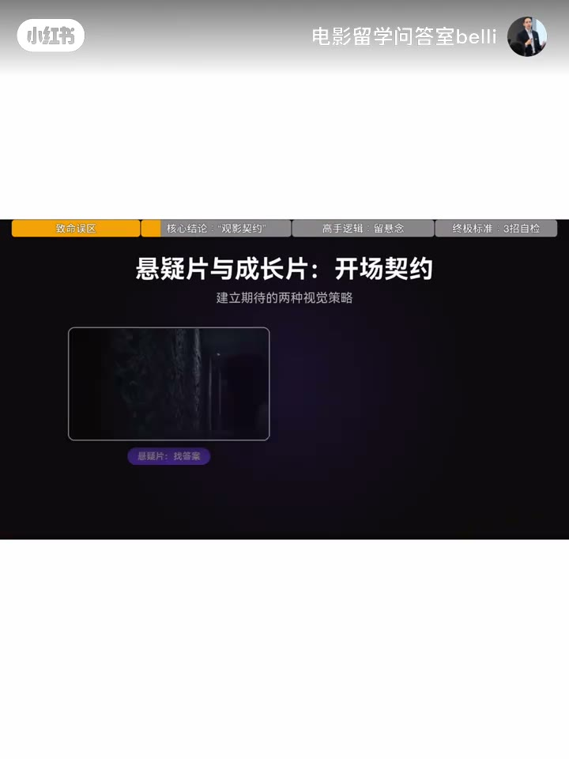
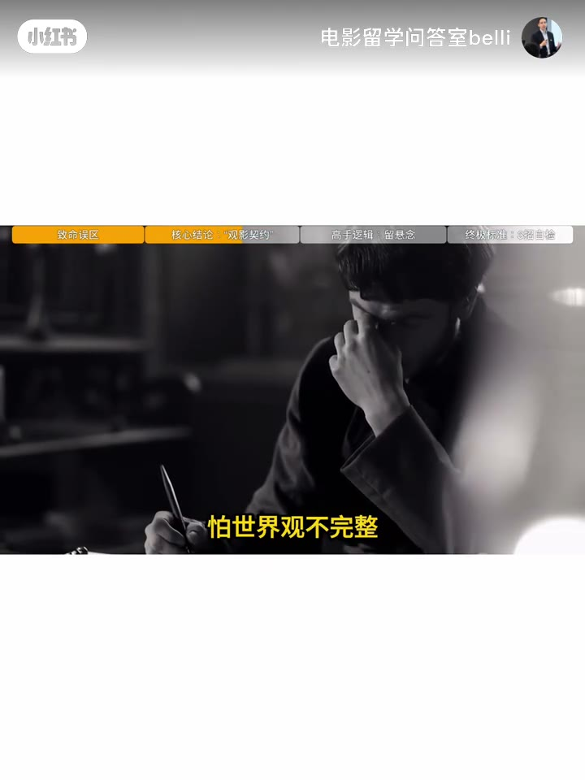
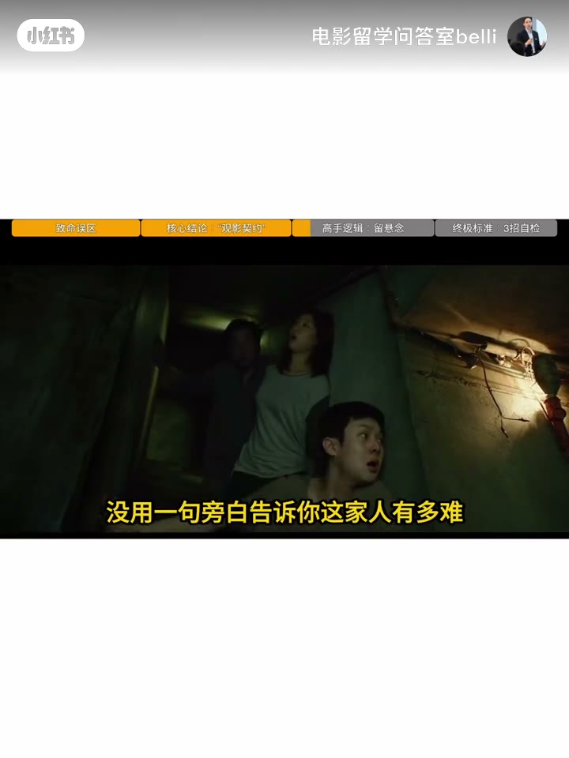
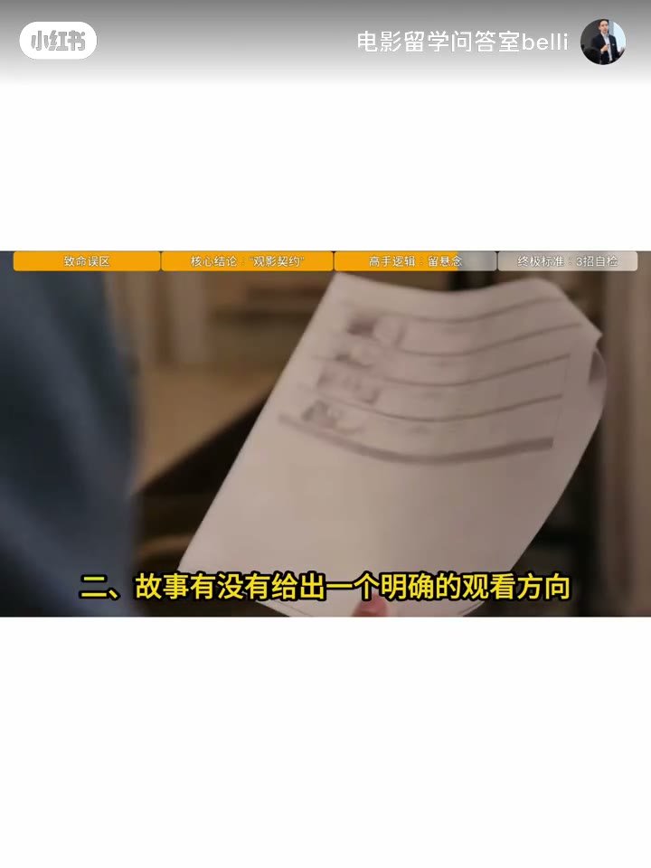
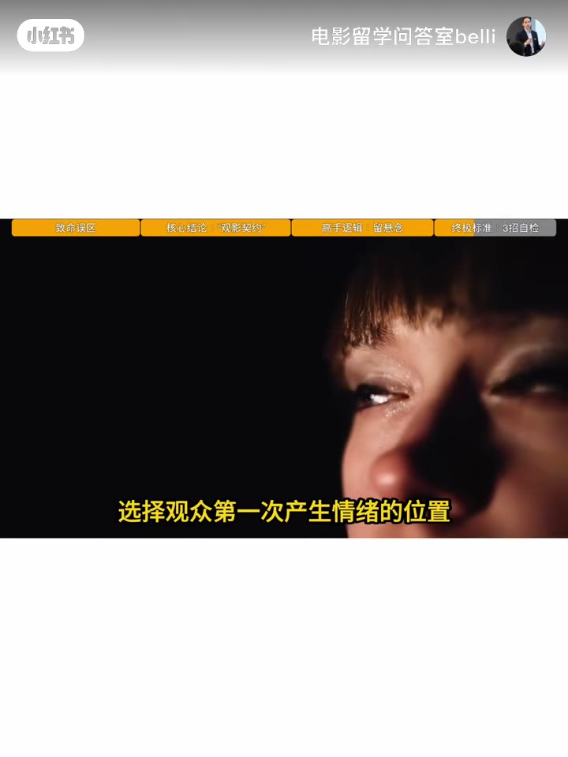
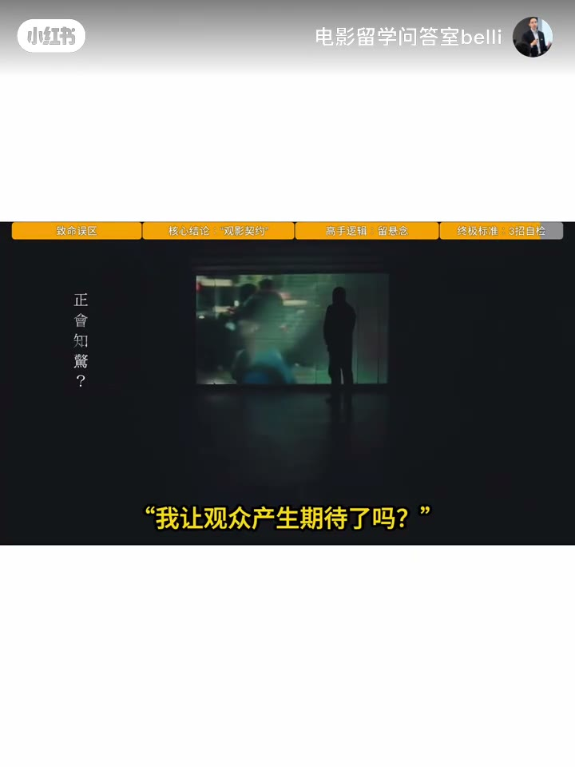

内容要点
你写了三个月的剧本,观众只给你10秒这10秒没抓住,后面写的再好,也白写大家好,我是阿布老师,大家节后好啊今天给大家加一期剧本特辑也是应了粉丝朋友的要求啊今天讲透一件事电影开场不是介绍故事,是建立期待先说个反常识的绝大多数剧本不是输在故事不
签不清楚,观众就滑走了悬疑篇,开场甩一个异常事件一个秘密,一个无法解释的现象观众立刻进入找答案状态,成长篇开场没有大事件但让你看到这个人现在的生活状态他的缺失,他的困境观众立刻进入共情状态类型不同,签法不同但都必须签好,开场,不是信息最多是
高手第一页写的是一个问题看寄生虫的开场他没解释韩国的阶层结构没用一句旁白告诉你这家人有多难他只做了一件事把你带进一个半地下室用空间位置,生活细节,人物行动让你几分钟内自然看懂这家人处在什么位置有什么限制,想要什么这就是电影语言里的视觉介绍V
三个都打勾第一页才算立足最后说个很多人忽略的点现在AI三分钟就能帮你生成完整的世界观人物小转,剧情线但它替你做不了最重要的一件事选择,选择第一个画面选择第一个事件选择观众第一次产生情绪的位置电影创作最核心的能力从来不是创造而是选择真正好的开
你写了三个月的剧本,观众只给你10秒这10秒没抓住,后面写的再好,也白写大家好,我是阿布老师,大家节后好啊今天给大家加一期剧本特辑也是应了粉丝朋友的要求啊今天讲透一件事电影开场不是介绍故事,是建立期待先说个反常识的绝大多数剧本不是输在故事不
00:00–00:45你写了三个月的剧本,观众只给你10秒这10秒没抓…
你写了三个月的剧本,观众只给你10秒这10秒没抓住,后面写的再好,也白写大家好,我是阿布老师,大家节后好啊今天给大家加一期剧本特辑也是应了粉丝朋友的要求啊今天讲透一件事电影开场不是介绍故事,是建立期待先说个反常识的绝大多数剧本不是输在故事不好是输在第一页观众没有任何理由继续看专业编剧把开场这件事叫电影契约Film contract注意了,契约契约这是一个约定俗成的注意点电影一开始,创作者就和观众签了这份隐姓约定这份合同只签三条一,这是什么类型的故事二,我该关注谁三,接下来我该期待什么签清楚,观众自己就入戏了

00:45–01:30签不清楚,观众就滑走了悬疑篇,开场甩一个异常事件…
签不清楚,观众就滑走了悬疑篇,开场甩一个异常事件一个秘密,一个无法解释的现象观众立刻进入找答案状态,成长篇开场没有大事件但让你看到这个人现在的生活状态他的缺失,他的困境观众立刻进入共情状态类型不同,签法不同但都必须签好,开场,不是信息最多是信息效率最高很多创作者最爱做加法怕背景不够,怕人物不立体怕世界观不完整,于是不断加专业编剧做的是减法删解式只留三样东西最能代表人物状态的那一个瞬间最能体现故事核心的那一个问题观众最想追的那一个未知区别就在这新手第一页写的是一份人物简历


01:30–02:16高手第一页写的是一个问题看寄生虫的开场他没解释韩…
高手第一页写的是一个问题看寄生虫的开场他没解释韩国的阶层结构没用一句旁白告诉你这家人有多难他只做了一件事把你带进一个半地下室用空间位置,生活细节,人物行动让你几分钟内自然看懂这家人处在什么位置有什么限制,想要什么这就是电影语言里的视觉介绍Visual Introduction不是用台词告诉观众他是谁而是用画面让观众感受到他是谁所以检查你的第一页只过三个标准一,人物是靠行动被认识还是靠介绍被认识二,故事有没有给出一个明确的观看方向三,第一场戏结束后观众脑子里有没有留下一个想继续追的问题


02:16–03:01三个都打勾第一页才算立足最后说个很多人忽略的点现…
三个都打勾第一页才算立足最后说个很多人忽略的点现在AI三分钟就能帮你生成完整的世界观人物小转,剧情线但它替你做不了最重要的一件事选择,选择第一个画面选择第一个事件选择观众第一次产生情绪的位置电影创作最核心的能力从来不是创造而是选择真正好的开场不是在告诉观众我的故事很复杂而是在最短时间里让观众相信这个故事值得看下去现在把你的第一页翻出来别问我介绍清楚了吗只问一句我让观众产生期待了吗下一期为什么电影对白不能只是聊天真正高级的对白都是经典的台词


完整转录（84段）
Whisper medium · 中文 · 已转简体，可能有识别误差。
你写了三个月的剧本,观众只给你10秒
这10秒没抓住,后面写的再好,也白写
大家好,我是阿布老师,大家节后好啊
今天给大家加一期剧本特辑
也是应了粉丝朋友的要求啊
今天讲透一件事
电影开场不是介绍故事,是建立期待
先说个反常识的
绝大多数剧本不是输在故事不好
是输在第一页
观众没有任何理由继续看
专业编剧把开场这件事叫电影契约
Film contract
注意了,契约契约这是一个约定俗成的注意点
电影一开始,创作者就和观众签了这份隐姓约定
这份合同只签三条
一,这是什么类型的故事
二,我该关注谁
三,接下来我该期待什么
签清楚,观众自己就入戏了
签不清楚,观众就滑走了
悬疑篇,开场甩一个异常事件
一个秘密,一个无法解释的现象
观众立刻进入找答案状态,成长篇
开场没有大事件
但让你看到这个人现在的生活状态
他的缺失,他的困境
观众立刻进入共情状态
类型不同,签法不同
但都必须签
好,开场,不是信息最多
是信息效率最高
很多创作者最爱做加法
怕背景不够,怕人物不立体
怕世界观不完整,于是不断加
专业编剧做的是减法删解式
只留三样东西
最能代表人物状态的那一个瞬间
最能体现故事核心的那一个问题
观众最想追的那一个未知
区别就在这
新手第一页写的是一份人物简历
高手第一页写的是一个问题
看寄生虫的开场
他没解释韩国的阶层结构
没用一句旁白告诉你这家人有多难
他只做了一件事
把你带进一个半地下室
用空间位置,生活细节,人物行动
让你几分钟内自然看懂
这家人处在什么位置
有什么限制,想要什么
这就是电影语言里的视觉介绍
Visual Introduction
不是用台词告诉观众他是谁
而是用画面让观众感受到他是谁
所以检查你的第一页
只过三个标准
一,人物是靠行动被认识
还是靠介绍被认识
二,故事有没有给出一个明确的观看方向
三,第一场戏结束后
观众脑子里有没有留下一个想继续追的问题
三个都打勾
第一页才算立足
最后说个很多人忽略的点
现在AI三分钟就能帮你生成完整的世界观
人物小转,剧情线
但它替你做不了最重要的一件事
选择,选择第一个画面
选择第一个事件
选择观众第一次产生情绪的位置
电影创作最核心的能力从来不是创造
而是选择真正好的开场
不是在告诉观众我的故事很复杂
而是在最短时间里
让观众相信这个故事值得看下去
现在把你的第一页翻出来
别问我介绍清楚了吗
只问一句
我让观众产生期待了吗
下一期
为什么电影对白不能只是聊天
真正高级的对白都是经典的台词